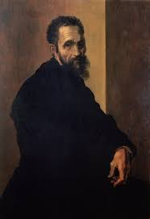

Michelangelo Buonarroti, pintor, escultor e arquiteto
renascentista.
Linha do Tempo
- 1475: Nascimento em Caprese, República de Florença (atual Itália)
- 1488: Inicia seu aprendizado com o pintor Domenico Ghirlandaio em Florença
- 1496-1501: Esculpe a estátua de Baco
- 1501-1504: Criação da estátua de Davi
- 1505-1506: Pinta o afresco "A Sagrada Família" para a igreja de Santo Espírito
- 1508-1512: Afresco no teto da Capela Sistina
- 1513-1534: Projeto e construção da Basílica de São Pedro
- 1519-1534: Esculpe a "Pietà Rondanini"
- 1536-1541: Projeto da Biblioteca Laurentina na Basílica de San Lorenzo em Florença
- 1547-1555: Trabalha na construção do Palácio Farnese em Roma
- 1564: Falecimento em Roma